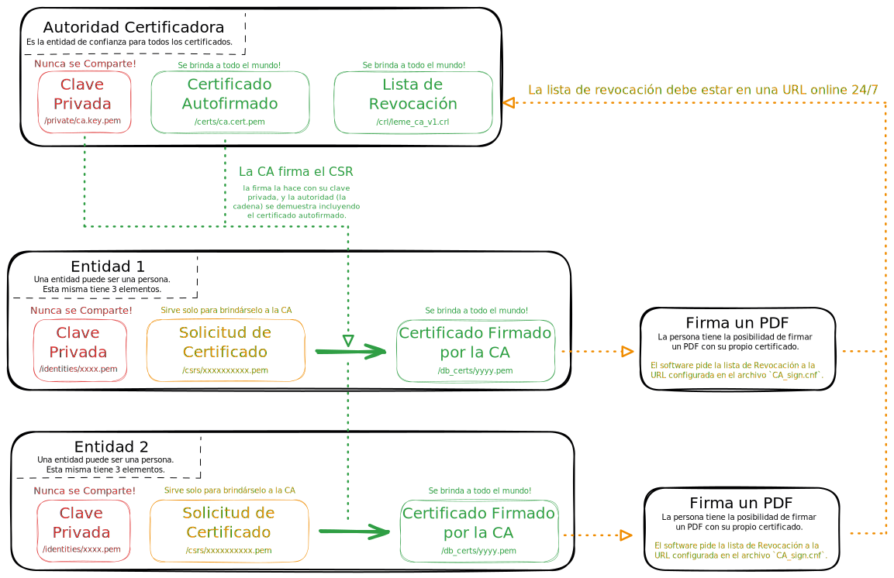
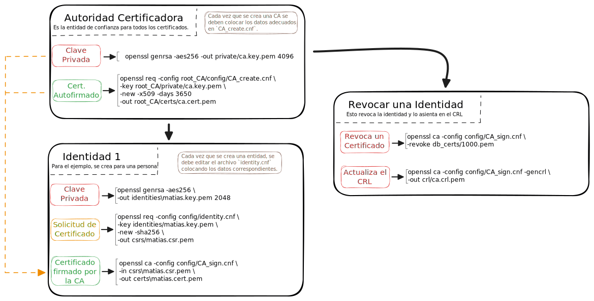
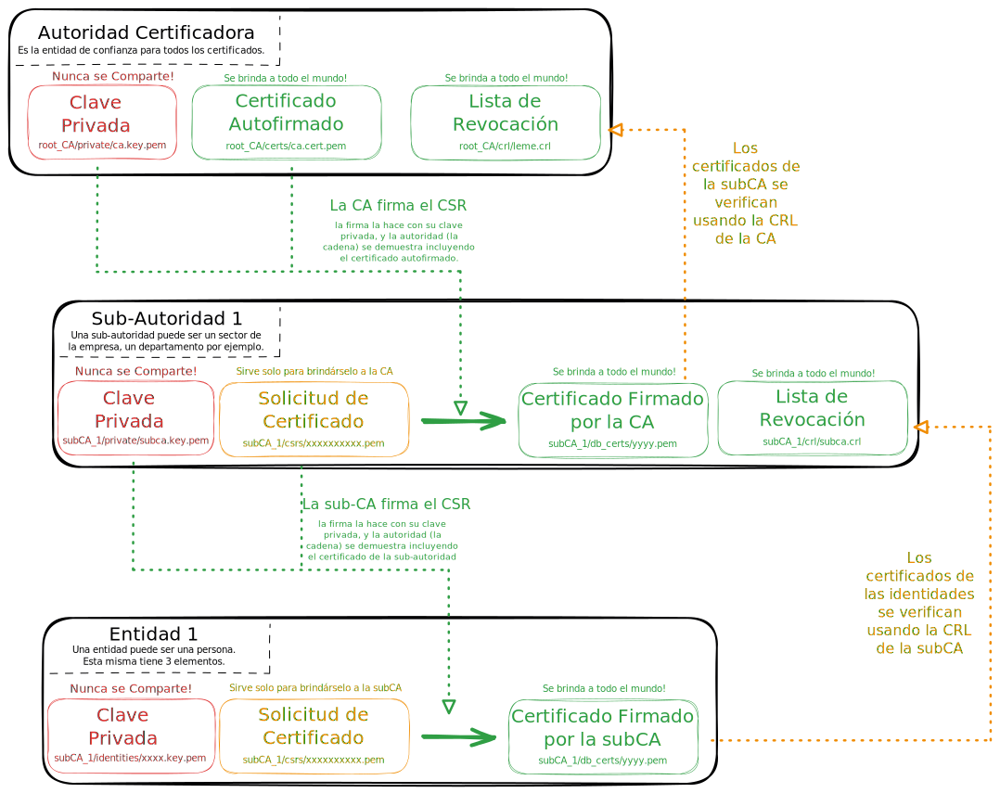
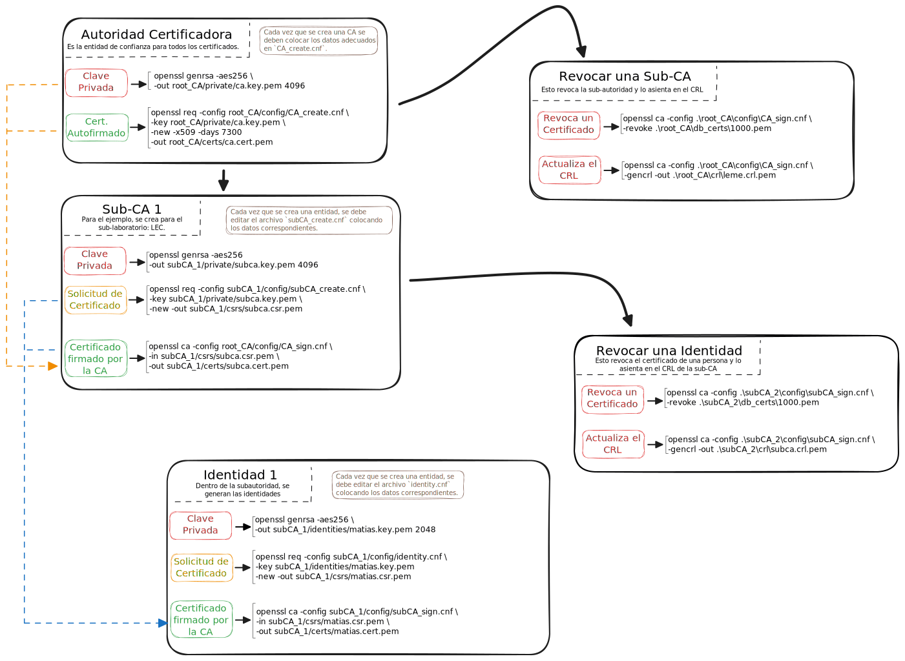

CA(Autoridad de Certificación) : Es la entidad emisora de certificados y CRL
PKI(infraestructura de Clave Pública) : Es la arquitectura de seguridad donde la confianza se
transmite a través de la firma de un CA confiable.
RA(Autoridad de Registro): Entidad que maneja la inscripción a PKO. Puede ser idéntico al CA.
certificados: Clave pública e identificación vinculadas por una firma CA
CSR (Solicitud de firma de certificados): Solicitud de certificado. Contiene clave pública e
identificación para ser certificado.
CRL (Lista de revocación de certificados): Es emitido por una CA a intervalos regulares.
CPS (Declaración de práctica de Certificación): Documento que describe la estructura y los procesos
de una CA.
Tipos de CA:
Raiz CA: Ca en la raiz de una jerarquía PKI. Emite únicamente certificados CA.
CA Intermedio: CA debajo de la CA Raiz pero no una CA de firma. Emite únicamente certificados CA.
Firmando CA: CA en la parte inferior de una jerarquía PKI. Emite únicamente certificados de usuario.
Tipos de Certificados:
Certificados CA: Certificado de una CA. Se utiliza para firmar certificados y CRL.
Certificado Raiz: Certificado autofirmado en la raíz de una jerarquía PKI. Sirve como ancla de confianza de la PKI.
Certificado Cruzado: Certificado CA emitido por una CA externa en la jerarquía principal de PJI. Se utiliza pra conectar dos PKI y,
por lo tanto, generalmente viene en pares.
Certificado de Usuario: Certificado de entidad final para uno o más fines: protección de correo electrónico, autenticación de
servidor, firma de código, etc. Un certificado de usuario no puede firmar otros certificados.
Formato de Archivos:
PEM (Correo con privacidad mejorada): Formato de texto. Datos codificados en base64 con
lineas de encabezado y pie de página. Formato preferido en OpenSSL y la mayoría de software basado en él.
DER (Reglas de codificación distinguidas): Formato binario. Formato preferido en entornos Windows.
También el formato oficial para descarga por internet de certificados y CRL.
Estructura Básica (Única CA)
Se puede resumir en el siguiente esquema:

Directorio de Trabajo
En algun directorio conocido, se deberá crear la siguiente estructura de directorios y archivos:
📂 CA_v1
├ 📂certs -> Acá aparecerán los certificados a compartir
├ 📂config -> Configuraciones `.cnf`
├ 📂crl -> Acá se mantiene la lista de revocación
├ 📂csrs -> Acá se ubican las solicitudes de certificados
├ 📂db_certs -> OpenSSL mantiene acá los certificados firmados (no se deben quitar, es para uso interno)
├ 📂identities -> Contiene las claves privadas de cada identidad
├ 📂private -> Contiene la clave privada de la CA (y demás datos que se consideren importantes)
├ 📝crlnumber -> Lleva la cuenta de los certificados revocados
├ 📝serial -> Lleva la cuenta de los certificados emitidos
└ 📝index.txt -> Base de datos con el listado de los certificados (válidos y revocados)
Notas: Los archivos de texto no deben tener ningún salto de línea. Cargar en crlnumber y en serial el valor 1000).
Forma simple de crear los directorios y archivos...
Para Windows:
mkdir certs,config,crl,csrs,db_certs,identities,private # Carpetas de la CA
New-Item -ItemType File -Path "serial","crlnumber","index.txt" # Archivos
"1000" | Out-File -Encoding ascii -NoNewline crlnumber # Valores iniciales para crlnumber
"1000" | Out-File -Encoding ascii -NoNewline serial # Valores iniciales para serial
cd ..
Para Linux:
mkdir certs config crl csrs db_certs identities private # Carpetas de la CA
touch index.txt
echo 1000 > serial
echo 1000 > crlnumber
cd ..
Archivos de Configuraciones
config/CA_create.cnf
# CA_create.cnf
#
# Valores a editar:
# - `req_distinguished_name`: Colocar los datos de la Autoridad Certificante (CA)
# ---------------------------------------------------------------------
# Parámetros por defecto para generar solicitudes de certificados (CSR)
# Se usa cuando se genera un CSR con `openssl req -new...`.
# ---------------------------------------------------------------------
[ req ]
default_bits = 4096 # Tamaño por defecto de la clave generada
default_md = sha256 # Algoritmo hash para firmar el CRLs
prompt = no # No pedir datos por consola
distinguished_name = req_distinguished_name # Seccion con los datos del sujeto (DN)
x509_extensions = v3_ca # Si se usa `-x509`, aplicar estas extensiones
# ------------------------------------------------------------
# Valores que se usarán para el Distinguished Name del CA
# Se usa cuando se
# ------------------------------------------------------------
[ req_distinguished_name ]
C = AR # País (Argentina)
ST = Buenos Aires # Provincia
L = La Plata # Localidad
O = LEME # Nombre de la organización
OU = Facultad de Ingeniería, UNLP # Unidad organizacional
CN = LEME CA v1 # Common Name (identificador de la CA)
# ------------------------------------------
# Extensiones: para certificados de tipo CA
# ------------------------------------------
[ v3_ca ]
subjectKeyIdentifier = hash # Identificador único de clave del sujeto
authorityKeyIdentifier = keyid:always,issuer # Identificador del emisor (CA)
basicConstraints = critical, CA:true # Este certificado es una CA
keyUsage = critical, digitalSignature, cRLSign, keyCertSign # Permisos: firmar, CRL, etc.
config/CA_sign.cnf
# CA_sign.cnf
#
# Valores a editar:
# - `dir`: Path de la Sub-CA -> ./root_CA
# - `crlDistributionPoints`: URL del CRL que tendrá la CA (root_ca/crl)
# ------------------------------------------------------------
# Indica el motor general de CA
# Se usa cuando se ejecuta `openssl ca -cofig openssl.cnf ...`
# ------------------------------------------------------------
[ ca ]
default_ca = CA_default
# ---------------------------------------------
# Configuración principal de la subCA
# Llama a estos valores el bloque anterior.
# ---------------------------------------------
[ CA_default ]
dir = . # Directorio base
certs = $dir/certs # Certificados emitidos
crl_dir = $dir/crl # CRLs
new_certs_dir = $dir/db_certs # Nuevos certificados (por serial)
database = $dir/index.txt # Base de datos de certificados
serial = $dir/serial # Último serial usado
crlnumber = $dir/crlnumber # Para emitir CRLs
RANDFILE = $dir/private/.rand # Random seed
certificate = $dir/certs/ca.cert.pem # Certificado del CA
private_key = $dir/private/ca.key.pem # Clave privada del CA
default_days = 365 # Duración por defecto (puede ajustarse)
default_md = sha256 # Algoritmo hash
preserve = no # No mantener atributos extra del CSR
policy = policy_match # Política usada al firmar
email_in_dn = no
prompt = no # No pedir campos interactivos (como país, etc.)
crl_extensions = crl_ext # Extensiones que se incluirán en las cRLSign
default_crl_days= 30 # Validez de la CRL (en días)
x509_extensions = v3_ca # Extensiones aplicadas a certificados normales (no CA)
# ----------------------------------------------------------
# Política de validación de campos del CSR
# Se usa cuando se genera un CSR con `openssl req -new...`.
# ----------------------------------------------------------
[ policy_match ]
countryName = optional # País
stateOrProvinceName = optional # Provincia o estado
organizationName = optional # Nombre de la empresa
organizationalUnitName = supplied # Obligatorio: Departamento o sector
commonName = supplied # Obligatorio: El nombre común, por ejemplo sector de la empresa
emailAddress = optional # Email
[ v3_ca ]
basicConstraints = critical, CA:true, pathlen:0 # pathlen:0 limita a la sub-CA a no emitir más sub-sub-CA
subjectKeyIdentifier = hash # Identificador del sujeto
authorityKeyIdentifier = keyid,issuer # Referencia a la CA
keyUsage = critical, cRLSign, keyCertSign # Sólo permite firmar CRL y certificados
crlDistributionPoints = URI:https://URL/leme.crl # URL del archivo CRL de la CA
# ------------------------------------------------
# Extensiones: que se agregan al generar una CRL
# ------------------------------------------------
[ crl_ext ]
authorityKeyIdentifier=keyid:always # Identificador del emisor de la CRL
config/identity.cnf
# identity.cnf
[ req ]
default_bits = 2048
default_md = sha256
prompt = no
distinguished_name = identity_data
[ identity_data ]
C = AR # País (Argentina)
ST = Buenos Aires # Provincia
L = La Plata # Localidad
O = LEME # Nombre de la organización
OU = Facultad de Ingeniería, UNLP # Unidad organizacional
# => Nombre y Apellido de la persona, luego su email
CN = Empleado 1
emailAddress = empleado1@dominio.com
Proceso de Creación de Firmas y Certificados
Se resume en la siguiente imagen pero luego de la misma se detallan los comandos usados:

Creación de la CA
# Crea la clave privada del CA
openssl genrsa -aes256 -out private/ca.key.pem 4096
# Crea el certificado autofirmado
openssl req -config root_CA/config/CA_create.cnf -key root_CA/private/ca.key.pem -new -x509 -days 365 -out root_CA/certs/ca.cert.pem
Creación de las Identidades (Personas)
# Creo la clave privada para el empleado `Matias`
openssl genrsa -aes256 -out identities/matias.key.pem 2048
# Creo la solicitud del certificado para el empleado `Matias`
openssl req -config config/identity.cnf -key identities/matias.key.pem -new -sha256 -out csrs/matias.csr.pem
La CA firma la Solicitud de Firma del Certificado CSR
# La CA firma la solicitud de certificado
openssl ca -config config/CA_sign.cnf -in csrs\matias.csr.pem -out certs\matias.cert.pem
Revocación de la identidad (Persona)
# Revocar el certificado del usuario Matias (Aquel que figura en el archivo `index.txt`)
openssl ca -config config/CA_sign.cnf -revoke db_certs/1000.pem
# Regenerar el archivo CRL
openssl ca -config config/CA_sign.cnf -gencrl -out crl/ca.crl.pem
Estructura Completa (CA con Sub-CAs)
De igual forma se resume con la siguiente imagen:

Directorio de Trabajo
El directorio ahora se agranda dado que se tiene que crear la estructura vista anteriormente para cada Sub-CA y una para la CA (a la que llamaremos Root-CA):
📂 CA_v2
├ 📂root_CA
│ ├ 📂certs
│ ├ 📂config
│ │ ├ 📝CA_create.cnf -> Contiene los datos y los parámetros para la creación de la CA
│ │ └ 📝CA_sign.cnf -> Contiene los parámetros para la firma de las sub-autoridades
│ ├ 📂crl
│ ├ 📂csrs
│ ├ 📂db_certs
│ ├ 📂private
│ ├ 📝crlnumber
│ ├ 📝serial
│ └ 📝index.txt
│
├ 📂subCA_1
│ ├ 📂certs
│ ├ 📂config
│ │ ├ 📝subCA_create.cnf -> Contiene los datos y los parámetros para la creacion de las sub-autoridades
│ │ ├ 📝subCA_sign.cnf -> Contiene los parámetros para cuando la sub-autoridad firma y certifica una identidad (persona)
│ │ └ 📝identity.cnf -> Contiene los datos de la identidad (persona)
│ ├ 📂crl
│ ├ 📂csrs
│ ├ 📂db_certs
│ ├ 📂identities
│ ├ 📂private
│ ├ 📝crlnumber
│ ├ 📝serial
│ └ 📝index.txt
·
·
·
Notas: Los archivos de texto no deben tener ningún salto de línea. Cargar en crlnumber y en serial el valor 1000).
Forma simple de crear los directorios y archivos...
Para Windows:
mkdir root_CA,subCA_1 # Directorios principales (CA + 1 subCA)
cd root_CA
mkdir certs,config,crl,csrs,db_certs,private # Carpetas de la CA
New-Item -ItemType File -Path "serial","crlnumber","index.txt" # Archivos
"1000" | Out-File -Encoding ascii -NoNewline crlnumber # Valores iniciales para crlnumber
"1000" | Out-File -Encoding ascii -NoNewline serial # Valores iniciales para serial
cd ../subCA_1
mkdir certs,config,crl,csrs,db_certs,identities,private # Carpetas de la subCA
New-Item -ItemType File -Path "serial","crlnumber","index.txt" # Archivos
"1000" | Out-File -Encoding ascii -NoNewline crlnumber # Valores iniciales para crlnumbe
"1000" | Out-File -Encoding ascii -NoNewline serial # Valores iniciales para serial
cd ..
Para Linux:
mkdir root_CA subCA_1 # Directorios principales (CA + 1 subCA)
cd root_CA
mkdir certs config crl csrs db_certs private # Carpetas de la CA
touch index.txt
echo 1000 > serial
echo 1000 > crlnumber
cd ../subCA_1
mkdir certs config crl csrs db_certs identities private # Carpetas de la subCA
touch index.txt
echo 1000 > serial
echo 1000 > crlnumber
cd ..
Archivos de Configuraciones
Autoridad Certificadora (CA)
root_CA/config/CA_create.cnf
# CA_create.cnf
#
# Valores a editar:
# - `req_distinguished_name`: Colocar los datos de la Autoridad Certificante (CA)
# ---------------------------------------------------------------------
# Parámetros por defecto para generar solicitudes de certificados (CSR)
# Se usa cuando se genera un CSR con `openssl req -new...`.
# ---------------------------------------------------------------------
[ req ]
default_bits = 4096 # Tamaño por defecto de la clave generada
default_md = sha256 # Algoritmo hash para firmar el CRLs
prompt = no # No pedir datos por consola
distinguished_name = req_distinguished_name # Seccion con los datos del sujeto (DN)
x509_extensions = v3_ca # Si se usa `-x509`, aplicar estas extensiones
# ------------------------------------------------------------
# Valores que se usarán para el Distinguished Name del CA
# Se usa cuando se
# ------------------------------------------------------------
[ req_distinguished_name ]
C = AR # País (Argentina)
ST = Buenos Aires # Provincia
L = La Plata # Localidad
O = LEME # Nombre de la organización
OU = Facultad de Ingeniería, UNLP # Unidad organizacional
CN = LEME CA v2 # Common Name (identificador de la CA)
# ------------------------------------------
# Extensiones: para certificados de tipo CA
# ------------------------------------------
[ v3_ca ]
subjectKeyIdentifier = hash # Identificador único de clave del sujeto
authorityKeyIdentifier = keyid:always,issuer # Identificador del emisor (CA)
basicConstraints = critical, CA:true # Este certificado es una CA
keyUsage = critical, digitalSignature, cRLSign, keyCertSign # Permisos: firmar, CRL, etc.
root_CA/config/CA_sign.cnf
# CA_sign.cnf
#
# Valores a editar:
# - `dir`: Path de la Sub-CA -> ./root_CA
# - `crlDistributionPoints`: URL del CRL que tendrá la CA (root_ca/crl)
# ------------------------------------------------------------
# Indica el motor general de CA
# Se usa cuando se ejecuta `openssl ca -cofig openssl.cnf ...`
# ------------------------------------------------------------
[ ca ]
default_ca = CA_default
# ---------------------------------------------
# Configuración principal de la subCA
# Llama a estos valores el bloque anterior.
# ---------------------------------------------
[ CA_default ]
dir = ./root_CA # Directorio base
certs = $dir/certs # Certificados emitidos
crl_dir = $dir/crl # CRLs
new_certs_dir = $dir/db_certs # Nuevos certificados (por serial)
database = $dir/index.txt # Base de datos de certificados
serial = $dir/serial # Último serial usado
crlnumber = $dir/crlnumber # Para emitir CRLs
RANDFILE = $dir/private/.rand # Random seed
certificate = $dir/certs/ca.cert.pem # Certificado del CA
private_key = $dir/private/ca.key.pem # Clave privada del CA
default_days = 365 # Duración por defecto (puede ajustarse)
default_md = sha256 # Algoritmo hash
preserve = no # No mantener atributos extra del CSR
policy = policy_match # Política usada al firmar
email_in_dn = no
prompt = no # No pedir campos interactivos (como país, etc.)
crl_extensions = crl_ext # Extensiones que se incluirán en las cRLSign
default_crl_days= 30 # Validez de la CRL (en días)
x509_extensions = v3_ca # Extensiones aplicadas a certificados normales (no CA)
# ----------------------------------------------------------
# Política de validación de campos del CSR
# Se usa cuando se genera un CSR con `openssl req -new...`.
# ----------------------------------------------------------
[ policy_match ]
countryName = optional # País
stateOrProvinceName = optional # Provincia o estado
organizationName = optional # Nombre de la empresa
organizationalUnitName = supplied # Obligatorio: Departamento o sector
commonName = supplied # Obligatorio: El nombre común, por ejemplo sector de la empresa
emailAddress = optional # Email
[ v3_ca ]
basicConstraints = critical, CA:true, pathlen:0 # pathlen:0 limita a la sub-CA a no emitir más sub-sub-CA
subjectKeyIdentifier = hash # Identificador del sujeto
authorityKeyIdentifier = keyid,issuer # Referencia a la CA
keyUsage = critical, cRLSign, keyCertSign # Sólo permite firmar CRL y certificados
crlDistributionPoints = URI:https://URL/leme.crl # URL del archivo CRL de la CA
# ------------------------------------------------
# Extensiones: que se agregan al generar una CRL
# ------------------------------------------------
[ crl_ext ]
authorityKeyIdentifier=keyid:always # Identificador del emisor de la CRL
Sub-Autoridad Certificadora (subCA)
subCA_1/config/subCA_create.cnf
# subCA_create.cnf
[ req ]
default_bits = 4096
default_md = sha256
prompt = no
distinguished_name = identity_data
[ identity_data ]
C = AR
ST = Buenos Aires
L = La Plata
O = LEME
OU = Facultad de Ingenieria, UNLP
# => Nombre de la Sub-CA
CN = LEC (Laboratorio de Calibraciones)
emailAddress = lab-1@dominio.com
subCA_1/config/subCA_sign.cnf
# subCA_sign.cnf
# Valores a editar:
# - `dir`: Path de la sub-autoridad -> ./subCA_2
# - `crlDistributionPoints`: URL del archivo CRL de la SubCA (subCA_x/crl)
# ------------------------------------------------------------
# Indica el motor general de CA
# Se usa cuando se ejecuta `openssl ca -cofig openssl.cnf ...`
# ------------------------------------------------------------
[ ca ]
default_ca = subCA_default
# ---------------------------------------------
# Configuración principal de la sub-CA
# Llama a estos valores el bloque anterior.
# ---------------------------------------------
[ subCA_default ]
dir = ./subCA_3 # Directorio base
certs = $dir/certs # Certificados emitidos
crl_dir = $dir/crl # CRLs
new_certs_dir = $dir/db_certs # Nuevos certificados (por serial)
database = $dir/index.txt # Base de datos de certificados
serial = $dir/serial # Último serial usado
crlnumber = $dir/crlnumber # Para emitir CRLs
RANDFILE = $dir/private/.rand # Random seed
certificate = $dir/certs/subca.cert.pem # Certificado del CA
private_key = $dir/private/subca.key.pem # Clave privada del CA
default_days = 365 # Duración por defecto (puede ajustarse)
default_md = sha256 # Algoritmo hash
preserve = no # No mantener atributos extra del CSR
policy = policy_match # Política usada al firmar
email_in_dn = no
prompt = no # No pedir campos interactivos (como país, etc.)
crl_extensions = crl_ext # Extensiones que se incluirán en las cRLSign
default_crl_days= 30 # Validez de la CRL (en días)
x509_extensions = usr_cert # Extensiones aplicadas a certificados normales (no CA)
# ----------------------------------------------------------
# Política de validación de campos del CSR
# Se usa cuando se genera un CSR con `openssl req -new...`.
# ----------------------------------------------------------
[ policy_match ]
countryName = optional # País
stateOrProvinceName = optional # Provincia o estado
organizationName = optional # Nombre de la empresa
organizationalUnitName = supplied # Obligatorio: Departamento o sector
commonName = supplied # Obligatorio: El nombre común, por ejemplo nombre del empleado
emailAddress = optional # Email
# ------------------------------------------------------------
# Extensiones: para certificados de usuarios finales (no CA)
# ------------------------------------------------------------
[ usr_cert ]
basicConstraints = CA:FALSE # No es una CA
nsComment = "Certificado emitido por SubCA: LEC" # Comentario opcional
subjectKeyIdentifier = hash # Identificador del sujeto
authorityKeyIdentifier = keyid,issuer # Referencia a la CA
keyUsage = critical, digitalSignature # Sólo permite firmar (no cifrar)
extendedKeyUsage = clientAuth, emailProtection # Uso extendido: autenticación y firma de correo
crlDistributionPoints = URI:https://URL/lec.crl # URL del archivo CRL de la SubCA
# ------------------------------------------------
# Extensiones: que se agregan al generar una CRL
# ------------------------------------------------
[ crl_ext ]
authorityKeyIdentifier=keyid:always # Identificador del emisor de la CRL
```
subCA_1/config/identity.cnf
# identity.cnf
[ req ]
default_bits = 2048
default_md = sha256
prompt = no
distinguished_name = identity_data
[ identity_data ]
C = AR # País (Argentina)
ST = Buenos Aires # Provincia
L = La Plata # Localidad
O = LEME # Nombre de la organización
OU = Facultad de Ingenieria, UNLP # Unidad organizacional
# => Nombre y Apellido de la persona, luego su email
CN = Empleado 1
emailAddress = empleado1@dominio.com
Proceso de Creación de Firmas y Certificados
Se resume en la siguiente imagen pero luego de la misma se detallan los comandos usados:

Creación de la CA
# Crea la clave privada del CA
openssl genrsa -aes256 -out root_CA/private/ca.key.pem 4096
# Crea el certificado autofirmado
openssl req -config root_CA/config/CA_create.cnf -key root_CA/private/ca.key.pem -new -x509 -days 3650 -out root_CA/certs/ca.cert.pem
Creación de la Sub-CA
# Crea la clave privada del CA
openssl genrsa -aes256 -out subCA_1/private/subca.key.pem 4096
# Crea la solicitud del certificado
openssl req -config subCA_1/config/subCA_create.cnf -key subCA_1/private/subca.key.pem -new -out subCA_1/csrs/subca.csr.pem
La CA firma el CSR de la Sub-CA
openssl ca -config root_CA/config/CA_sign.cnf -in subCA_1/csrs/subca.csr.pem -out subCA_1/certs/subca.cert.pem
Se crean las identidades (Personas dentro de la Sub-CA)
# Genero una clave privada para la persona `matias`.
openssl genrsa -aes256 -out subCA_1/identities/matias.key.pem 2048
# Genero una solicitud de certificado para la persona
openssl req -config subCA_1/config/identity.cnf -key subCA_1/identities/matias.key.pem-new -sha256-out subCA_1/csrs/matias.csr.pem
La Sub-CA firma los CSR de las identidades (Personas)
openssl ca -config subCA_1/config/subCA_sign.cnf -in subCA_1/csrs/matias.csr.pem -out subCA_1/certs/matias.cert.pem
Revocaciones
Para revocar una Sub-Autoridad
# Revoca un certificado
openssl ca -config .\root_CA\config\CA_sign.cnf -revoke .\root_CA\db_certs\1000.pem
# Regenera el CRL de la CA
openssl ca -config .\root_CA\config\CA_sign.cnf -gencrl -out .\root_CA\crl\leme.crl.pem
Para revocar una Identidad
# Revoca un certificado (Dentro de la Sub-CA)
openssl ca -config .\subCA_2\config\subCA_sign.cnf -revoke .\subCA_2\db_certs\1000.pem
# Regenera el CRL de la Sub-CA
openssl ca -config .\subCA_2\config\subCA_sign.cnf -gencrl -out .\subCA_2\crl\subca.crl.pem
🌱 Ideas en crecimiento...
Como una planta que crece con el tiempo, esta entrada se va completando a medida que florecen nuevas ideas y descubrimientos.